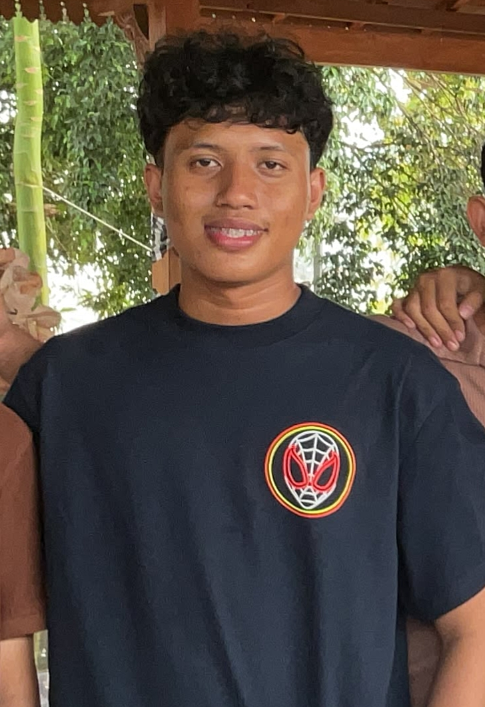

Hero Section
Muhammad Zhafran Shadiq
Tagline: Menggabungkan logika sistem, teknologi IoT, dan sudut pandang visual dalam berkarya.

Tentang Saya
Halo! Saya Muhammad Zhafran Shadiq, mahasiswa Sistem Informasi Fakultas Sains dan Teknologi UIN Syarif Hidayatullah yang berasal dari Tangerang. Saya senang mempelajari hal-hal baru, memiliki daya ingat yang kuat, serta terus melatih kepercayaan diri dalam berbicara di depan umum maupun menyampaikan pendapat. Selain menekuni dunia teknologi dan pemrograman, saya juga tertarik pada eksplorasi IoT, fotografi, musik, serta inisiatif berdampak positif seperti SDGs dan kegiatan sosial.
Tabel Skill
| No | Nama Skill | Tingkat Kemahiran |
|---|---|---|
| 1 | Internet of Things (IoT) | Basic |
| 2 | Fotografi | Intermediate |
| 3 | Pemrograman C++ & Algoritma Dasar | Basic |
| 4 | Git & GitHub | Basic |